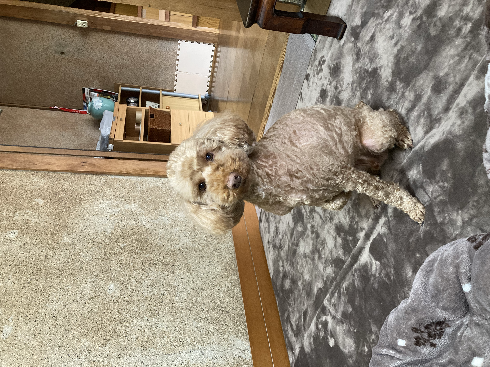

学習目標について
世新大学のWebデザイン教養講座で作成した、第四週目の練習作品です。
毎週のステップアップを通して、自分だけのWebポートフォリオを作り上げることが目標です！

今週獲得したスキル一覧：
- HTML5の基本構造の構造の理解とheadの設定
- h1〜h6 見出しタグとp段落の使い方
- header, nav, section, footerなどのセマンティック要素の活用
- ハイパーリンクと画像 (alt属性を含む)の追加
世新大学のWebデザイン教養講座で作成した、第四週目の練習作品です。
毎週のステップアップを通して、自分だけのWebポートフォリオを作り上げることが目標です！

| 週 | テーマモジュール1 |
|---|---|
| W1 ~ W5 | モジュール1：HTML / CSS / JS の基礎構造 |
| W7 ~ W10 | モジュール2：個人ポートフォリオ制作とGitHubデプロイ |